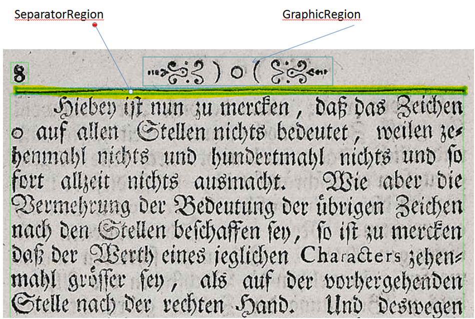

Level 1
Im Level 1 wird der Separator entsprechend seiner Funktion als Separator gekennzeichnet. Der Separator trennt gut sichtbar durch verschiedene Gestaltungselemente (Linien, Punkte, Sterne) zwei Teile voneinander. Schmuckelemente sind ausschließlich als Buchschmuck zu kennzeichnen.
